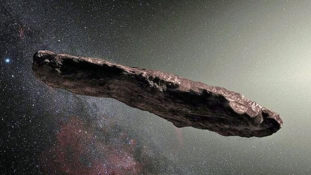

Oumuamua
El Oumuamua: El primer objeto interestelar descubierto en nuestro sistema solar
El Oumuamua es un objeto interestelar, es decir, un objeto que se originó en otra estrella y que ha entrado en nuestro sistema solar. Fue descubierto el 19 de octubre de 2017 por el telescopio Pan-STARRS 1 en Hawái.
El Oumuamua tiene una forma alargada, con un diámetro estimado de unos 200 metros. Se cree que es un asteroide o cometa extinto,
pero sus características físicas son únicas y no se parecen a ningún otro objeto conocido en nuestro sistema solar.
El Oumuamua salió de nuestro sistema solar el 2 de enero de 2018. Se espera que vuelva a nuestro sistema solar en unos 20.000 años.
Características del Oumuamua
1.- Forma alargada: El Oumuamua tiene una forma alargada, con un diámetro estimado de unos 200 metros. Su forma es similar a un cigarro o una galleta.
2.- Color rojo: El Oumuamua tiene un color rojo, lo que sugiere que está hecho de material rico en carbono.
3.- Alta excentricidad orbital: La órbita del Oumuamua es muy elíptica, con una excentricidad de 1,195.
Esto significa que su órbita es muy alargada, con un perihelio (su punto más cercano al Sol) de 0,25 unidades astronómicas
(UA) y un afelio (su punto más lejano al Sol) de 500 UA.
4.- Alta velocidad: El Oumuamua tiene una velocidad muy alta, de unos 26.000 kilómetros por hora.
Origen del Oumuamua
El origen del Oumuamua es desconocido. Se cree que podría ser un asteroide o cometa extinto, pero sus características físicas únicas no se parecen a ningún otro objeto conocido en nuestro sistema solar. Una posibilidad es que el Oumuamua sea un asteroide que se originó en una estrella cercana. Otra posibilidad es que sea un cometa extinto que se originó en una nebulosa interestelar.
Significado del Oumuamua
El descubrimiento del Oumuamua es un evento importante en la historia de la astronomía. Es el primer objeto interestelar descubierto en nuestro sistema solar, y nos brinda una nueva perspectiva sobre el universo. El Oumuamua nos muestra que hay objetos interestelares que pueden viajar a través de nuestro sistema solar. Esto sugiere que es posible que haya otros objetos interestelares que aún no hemos descubierto. El Oumuamua también nos brinda la oportunidad de estudiar un objeto que se originó en otra estrella. Esto nos puede ayudar a aprender más sobre la formación y evolución de los sistemas estelares.
El Oumuamua es un objeto único e intrigante que nos brinda una nueva perspectiva sobre el universo. Su descubrimiento es un hito importante en la historia de la astronomía, y nos brinda la oportunidad de aprender más sobre el origen y evolución de los sistemas estelares.